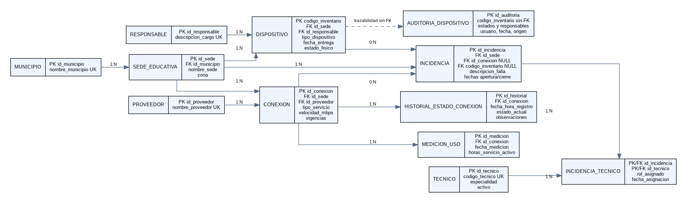

Sistema de Gestión de Base de Datos para Escuelas Rurales
18 de noviembre de 2026
Esta memoria documenta el diseño, implementación, pruebas y optimización del sistema de gestión de datos para escuelas rurales. La solución administra municipios, sedes, conexiones, historial operativo, dispositivos, responsables, mediciones, incidencias, técnicos y auditorías.
El modelo contiene 12 tablas relacionales y está diseñado para cumplir al menos la tercera forma normal (3FN). Está implementado para MariaDB 10.4 o superior, utiliza InnoDB e integridad referencial estricta, y fue validado mediante una instalación limpia, carga de al menos 50 registros por tabla, pruebas automatizadas, análisis de planes de ejecución y prueba de concurrencia.
Repositorio del proyecto: https://github.com/MatiasGreg/Base-de-datos-Escuelas-Rurales
Las instituciones educativas rurales requieren controlar la disponibilidad de los servicios de conectividad y el estado de su dotación tecnológica. Los datos deben permitir conocer qué sede tiene problemas, qué proveedor o conexión está involucrada, qué equipo fue afectado, quién atiende cada incidencia y qué cambios fueron realizados sobre el inventario.
El problema requiere conservar historiales de estado, evitar inconsistencias entre incidencias y recursos de una sede, calcular tiempos de reparación, asignar varios técnicos a una incidencia y preservar auditorías aunque un dispositivo sea retirado del inventario.
Diseñar e implementar una base de datos relacional completa que centralice y proteja la información operativa de conectividad y mantenimiento tecnológico en escuelas rurales.
El alcance incluye el ciclo completo de diseño y almacenamiento. No incluye una interfaz gráfica de usuario ni autenticación de aplicación; estas funciones quedan identificadas como trabajo futuro.
| ID | Requerimiento |
|---|---|
| R01 | Registrar municipio y zona de cada sede educativa. |
| R02 | Registrar conexiones instaladas por sede, proveedor, tipo, velocidad y vigencia. |
| R03 | Mantener el historial de estados de las conexiones con fecha y hora. |
| R04 | Registrar inventario, responsable y estado físico de dispositivos. |
| R05 | Registrar incidencias y mantenimientos con apertura y cierre. |
| R06 | Almacenar mediciones periódicas de horas de servicio activo. |
| R07 | Asignar uno o varios técnicos principales o de apoyo a cada incidencia. |
| R08 | Auditar cambios reales de estado físico y responsable. |
| ID | Política |
|---|---|
| RN01 | Una sede puede tener múltiples conexiones simultáneas o secuenciales. |
| RN02 | El historial de conexión es incremental e inmutable. |
| RN03 | Todo dispositivo tiene un responsable basado en cargo o dependencia. |
| RN04 | El tiempo de reparación se calcula, no se digita ni almacena. |
| RN05 | Conexión y dispositivo de una incidencia deben pertenecer a su sede. |
| RN06 | Técnicos identificados por código; atenciones requieren desactivación, no borrado. |
| RN07 | Cada cambio real de estado físico o responsable deja auditoría histórica. |
| Entidad | Tipo | Función |
|---|---|---|
| MUNICIPIO | Catálogo | Identifica la división administrativa. |
| SEDE_EDUCATIVA | Fuerte | Representa una escuela rural o sede. |
| PROVEEDOR | Catálogo | Identifica el servicio de telecomunicaciones. |
| CONEXION | Transaccional | Representa un enlace y su vigencia. |
| HISTORIAL_ESTADO_CONEXION | Débil/histórico | Conserva cambios de estado. |
| RESPONSABLE | Catálogo | Describe cargos o dependencias custodias. |
| DISPOSITIVO | Transaccional | Registra equipos tecnológicos. |
| INCIDENCIA | Transaccional | Registra fallas y mantenimientos. |
| MEDICION_USO | Transaccional | Conserva disponibilidad mensual. |
| TECNICO | Catálogo | Identifica personal por código anonimizado y especialidad. |
| INCIDENCIA_TECNICO | Asociativa N:M | Define técnico principal o de apoyo por incidencia. |
| AUDITORIA_DISPOSITIVO | Bitácora | Conserva cambios históricos sin FK al dispositivo. |

La relación muchos a muchos entre INCIDENCIA y
TECNICO se resuelve mediante
INCIDENCIA_TECNICO. AUDITORIA_DISPOSITIVO
conserva el valor codigo_inventario como referencia
histórica, sin llave foránea, para proteger la evidencia aunque el
equipo sea retirado del inventario.
Las claves primarias y foráneas quedan distribuidas de la siguiente manera:
| Tabla | Clave primaria | Claves foráneas |
|---|---|---|
| MUNICIPIO | id_municipio | — |
| PROVEEDOR | id_proveedor | — |
| RESPONSABLE | id_responsable | — |
| TECNICO | id_tecnico | — |
| SEDE_EDUCATIVA | id_sede | id_municipio |
| CONEXION | id_conexion | id_sede, id_proveedor |
| HISTORIAL_ESTADO_CONEXION | id_historial | id_conexion |
| DISPOSITIVO | codigo_inventario | id_sede, id_responsable |
| INCIDENCIA | id_incidencia | id_sede, id_conexion, codigo_inventario |
| MEDICION_USO | id_medicion | id_conexion |
| INCIDENCIA_TECNICO | id_incidencia, id_tecnico | ambas |
| AUDITORIA_DISPOSITIVO | id_auditoria | ninguna |
Se utilizaron columnas individuales, valores atómicos y no se
almacenaron listas repetidas. Los estados de conexión se separaron a
HISTORIAL_ESTADO_CONEXION. Los técnicos asignados se
representan con filas de INCIDENCIA_TECNICO, no con
columnas tecnico_1 y tecnico_2.
Las relaciones con claves simples tienen atributos que dependen
completamente de su clave primaria. En INCIDENCIA_TECNICO,
la clave compuesta (id_incidencia, id_tecnico)
determina rol_asignado y fecha_asignacion.
Los nombres de municipios, proveedores, responsables y técnicos no se repiten dentro de las relaciones transaccionales. Cada dato depende de la llave primaria sin pasar por una columna no clave:
SEDE_EDUCATIVA.id_municipio reemplaza el nombre del
municipio.CONEXION.id_proveedor reemplaza el nombre del
proveedor.DISPOSITIVO.id_responsable reemplaza la descripción del
cargo.INCIDENCIA_TECNICO separa asignación, incidencia y
técnico.| Relación | Determinante | Atributos determinados |
|---|---|---|
| MUNICIPIO | id_municipio | nombre_municipio |
| PROVEEDOR | id_proveedor | nombre_proveedor |
| RESPONSABLE | id_responsable | descripcion_cargo |
| TECNICO | id_tecnico | codigo_tecnico, especialidad, activo |
| SEDE_EDUCATIVA | id_sede | id_municipio, nombre_sede, zona |
| CONEXION | id_conexion | id_sede, id_proveedor, tipo, velocidad, vigencias |
| HISTORIAL_ESTADO_CONEXION | id_historial | id_conexion, fecha, estado, observaciones |
| DISPOSITIVO | codigo_inventario | sede, responsable, tipo, fecha, estado |
| INCIDENCIA | id_incidencia | sede, conexión, dispositivo, falla y fechas |
| MEDICION_USO | id_medicion | conexión, fecha y horas activas |
| INCIDENCIA_TECNICO | id_incidencia, id_tecnico | rol y fecha |
| AUDITORIA_DISPOSITIVO | id_auditoria | valores y metadatos del cambio |
Las dependencias completas y las justificaciones adicionales se
encuentran en docs/dependencias_funcionales.md.
| Acciones | Aplicación | Justificación |
|---|---|---|
| ON UPDATE CASCADE | Todas las FK de relaciones operativas | Propaga cambios de llaves padres. |
| ON DELETE RESTRICT | Relaciones con catálogos e historial | Impide borrar entidades que tienen dependencias. |
| ON DELETE CASCADE | INCIDENCIA_TECNICO → INCIDENCIA | Elimina solo la asignación dependiente. |
Las llaves foráneas garantizan existencia, pero no garantizan que una conexión o dispositivo pertenezca a la sede declarada en una incidencia. Los triggers insert/update resuelven RN05 mediante validaciones cruzadas.
El modelo utiliza:
bd_escuelas_rurales.utf8mb4.utf8mb4_unicode_ci.Se aplicaron:
UNIQUE para nombres únicos y códigos anonimizados.NOT NULL en datos esenciales.DEFAULT en estados, fechas y usuarios.CHECK para zonas, tipos de servicio, velocidades,
fechas, estados, mediciones, especialidades y roles.ON DELETE y ON UPDATE
contextualizados.El CHECK de CONEXION permite
Satelital, Fibra, Radioenlace y
Movil; exige velocidad positiva y vigencia final no
anterior al inicio.
La especificación completa de tipos, nulabilidad, claves y reglas
está en docs/diccionario_datos.md. A continuación se
resumen las tablas principales:
| Tabla | Columna clave | Tipo principal | Restricción destacada |
|---|---|---|---|
| MUNICIPIO | id_municipio | INT | PK, nombre único |
| SEDE_EDUCATIVA | id_sede | INT | FK municipio, zona CHECK |
| CONEXION | id_conexion | INT | velocidad positiva y fechas coherentes |
| HISTORIAL_ESTADO_CONEXION | id_historial | INT | estado CHECK e inmutabilidad |
| DISPOSITIVO | codigo_inventario | VARCHAR(50) | estado y responsable |
| INCIDENCIA | id_incidencia | INT | sede obligatoria, recursos opcionales |
| MEDICION_USO | id_medicion | INT | horas entre 0 y 744 |
| INCIDENCIA_TECNICO | PK compuesta | INT/INT | rol CHECK |
| AUDITORIA_DISPOSITIVO | id_auditoria | INT | sin FK para conservar historial |
sql/insercion_catalogos.sql genera 50 registros
para:
La carga base crea 50 incidencias y asignaciones N:M. El script
carga_asignaciones_tecnicos.sql añade 10 incidencias
adicionales y sus asignaciones, obteniendo 60 incidencias y 60
asignaciones.
Se implementaron cuatro vistas:
vw_resumen_general_sedes: indicadores por sede.vw_tendencia_mensual_conectividad: tendencias de
mediciones.vw_analisis_dimension_geografica_proveedor: análisis
territorial.vw_sedes_con_alta_carga_incidencias: sedes con al menos
dos incidencias y al menos una abierta. Esta consulta usa
GROUP BY y HAVING.Ejemplo con HAVING:
SELECT s.id_sede, s.nombre_sede,
COUNT(i.id_incidencia) AS total_incidencias,
SUM(CASE WHEN i.fecha_cierre IS NULL THEN 1 ELSE 0 END)
FROM SEDE_EDUCATIVA s
JOIN INCIDENCIA i ON i.id_sede = s.id_sede
GROUP BY s.id_sede, s.nombre_sede
HAVING COUNT(i.id_incidencia) >= 2
AND SUM(CASE WHEN i.fecha_cierre IS NULL THEN 1 ELSE 0 END) >= 1;fn_horas_reparacion(p_id_incidencia): diferencia entre
apertura y cierre.fn_disponibilidad_pct(p_id_conexion, p_anio, p_mes):
porcentaje de disponibilidad mensual a partir de mediciones y días del
mes.sp_registrar_incidencia: valida datos, registra la
incidencia, asigna técnico e inserta el estado inicial dentro de una
transacción.sp_cerrar_incidencia: bloquea el registro, valida fecha
y estado, registra cierre e historial, y calcula las horas.sp_actualizar_dispositivo: valida existencia y cambios,
actualiza el equipo y permite que los triggers generen auditoría.Los procedimientos usan START TRANSACTION,
COMMIT, ROLLBACK y handlers
SQLEXCEPTION para evitar cambios parciales.
Se implementaron seis triggers:
SELECT * FROM vw_resumen_general_sedes
ORDER BY total_incidencias_historicas DESC;
SELECT * FROM vw_tendencia_mensual_conectividad
ORDER BY fecha_mes;
SELECT * FROM vw_analisis_dimension_geografica_proveedor
ORDER BY municipio;
SELECT * FROM vw_sedes_con_alta_carga_incidencias
ORDER BY total_incidencias DESC;El script explain_optimizacion.sql analiza:
Los índices analíticos son:
idx_incidencia_fecha_inicio(fecha_inicio).idx_incidencia_fecha_cierre(fecha_cierre).idx_historial_conexion_fecha(id_conexion, fecha_hora_registro).En la prueba de MariaDB 10.4.34, el análisis por incidencia abierta
utilizó idx_incidencia_fecha_cierre; la consulta del último
estado utilizó idx_historial_conexion_fecha.
Los scripts estres_concurrencia_sesion_1.sql y
estres_concurrencia_sesion_2.sql ejecutan dos sesiones:
SELECT ... FOR UPDATE.COMMIT.Se realizó una instalación limpia en Docker con MariaDB 10.4.34 e InnoDB. Las instrucciones de instalación pueden repetirse desde:
mysql -u root -p < sql/script_creacion_tablas.sql
mysql -u root -p < sql/insercion_catalogos.sql
mysql -u root -p < sql/carga_asignaciones_tecnicos.sql
mysql -u root -p < sql/logica_avanzada.sql
mysql -u root -p < sql/vistas.sql| Tabla | Filas verificadas |
|---|---|
| MUNICIPIO | 50 |
| PROVEEDOR | 50 |
| RESPONSABLE | 50 |
| TECNICO | 50 |
| SEDE_EDUCATIVA | 50 |
| CONEXION | 50 |
| HISTORIAL_ESTADO_CONEXION | 50 |
| DISPOSITIVO | 50 |
| MEDICION_USO | 50 |
| AUDITORIA_DISPOSITIVO | 50 |
| INCIDENCIA | 60 |
| INCIDENCIA_TECNICO | 60 |
Las pruebas intencionalmente incorrectas confirmaron el rechazo de:
Urbana mediante chk_sede_zona.Cable y velocidad cero mediante restricciones de
conexión.chk_medicion_horas.Las pruebas verificaron:
La sesión 2 esperó el bloqueo, confirmó su actualización y dejó el
dispositivo en estado Dañado. La sesión 1 confirmó primero
el estado Regular. La prueba mostró serialización InnoDB y
auditoría posterior.
El proyecto cumple el ciclo completo: requisitos, diagrama conceptual, modelo relacional, normalización hasta 3FN, implementación física, carga masiva, restricciones, objetos programables, vistas, pruebas y optimización.
El diseño evita redundancias mediante catálogos y relaciones; protege historiales mediante triggers; garantiza coherencia cruzada que las FK no pueden expresar por sí solas; y conserva auditorías aun si un equipo se retira del inventario.
El uso de InnoDB, transacciones, bloqueos de fila y claves foráneas proporciona integridad bajo operaciones normales y concurrentes.
docs/fase_1_requisitos_y_diagrama_er.mddocs/fase_2_modelo_logico_y_normalizacion.mddocs/diccionario_datos.mddocs/dependencias_funcionales.mddocs/evidencias_pruebas.mdsql/